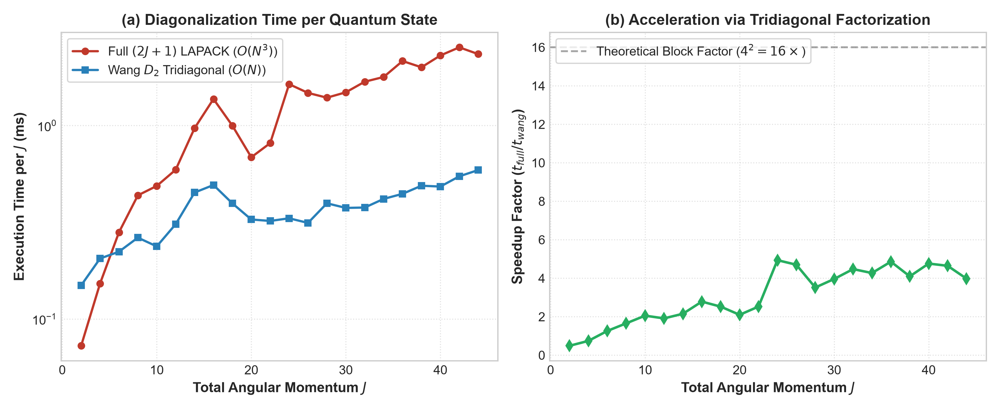
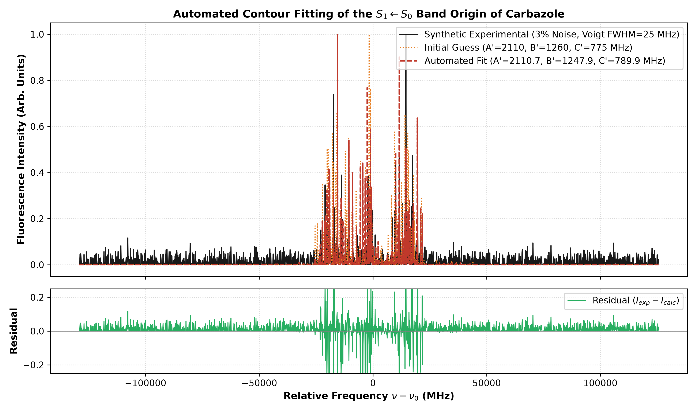
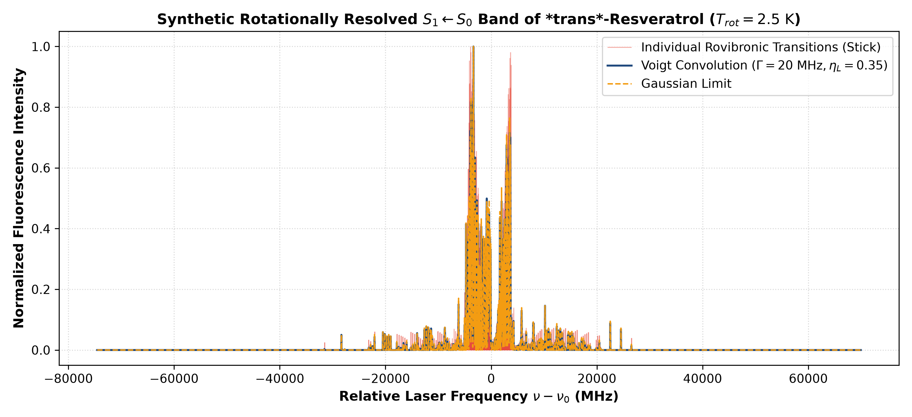
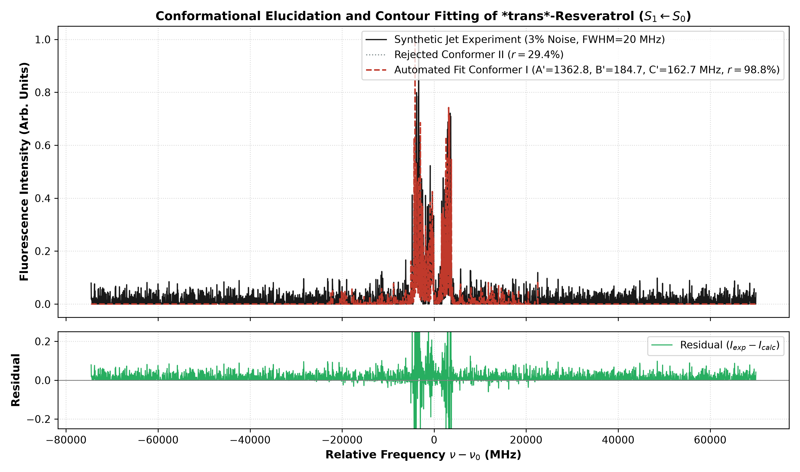

Una plataforma moderna en Python que actualiza las herramientas clásicas de hace 30 años, resuelve la física cuántica exacta en milisegundos y deduce la geometría molecular 3D sin asignación manual.
La espectroscopía láser en jets moleculares supersónicos permite "escuchar" la nota musical de las moléculas. Pero descifrar esa señal con herramientas tradicionales seguía siendo un cuello de botella artesanal.
A temperatura ambiente, una molécula biológica o un fármaco gira y vibra a millones de revoluciones por segundo. Para ver su forma real sin distorsión de solventes, el laboratorio del Dr. Leonardo la congela en un jet supersónico a -270 °C en microsegundos.
Al dispararle el láser frío, la molécula genera miles de transiciones rotacionales que se enciman entre sí. Para moléculas de más de 200 g/mol (como los polifenoles), las líneas forman un contorno continuo imposible de resolver con los ojos humanos.
Durante décadas, los laboratorios han dependido de programas pioneros pero hoy desactualizados en su interfaz y arquitectura, como JB95 (Visual Basic de 32 bits en Windows 95) o ajustes manuales línea por línea que pueden tomar semanas.
En lugar de pasar semanas intentando adivinar manualmente a qué giro cuántico pertenece cada pico del espectro, ¿podemos crear un ecosistema moderno en GPU que construya la molécula en 3D, calcule su tensor de inercia y ajuste el espectro experimental de forma autónoma en segundos?
No inventamos física ficticia: implementamos la física cuántica rigurosa del Hamiltoniano de Watson con una transformación de simetría que acelera el cálculo un orden de magnitud.
En ingeniería y física, el "Hamiltoniano" es solo el nombre elegante para la Fórmula de la Energía Total. Como la molécula gira en 3D libremente, tiene 3 inercias ($I_a, I_b, I_c$) que se traducen en tres constantes rotacionales ($A, B, C$).
El Hamiltoniano es una máquina: tú le metes las dimensiones de la molécula ($A, B, C$) y él te devuelve los niveles discretos de energía permitidos por la cuántica.
En la base tradicional, la matriz de cálculo mide \((2J+1) \times (2J+1)\) y está llena de números cruzados, exigiendo un costo cúbico \(O(N^3)\).
La idea genial de Wang (1929): Aprovechar la simetría de Klein (\(D_2\)). Es como ordenar un armario desordenado: separamos la ropa en 4 cajones independientes (\(E^+, E^-, O^+, O^-\)).
¡Cada bloque de Wang se vuelve estrictamente tridiagonal! Las computadoras resuelven matrices tridiagonales en tiempo lineal \(O(N)\). Discrepancia frente al método denso: menor a \(10^{-9}\) MHz (\(10^{-16}\) de error relativo).
Validamos el software desde moléculas triatómicas fundamentales (HITRAN / JPL: \(\text{H}_2\text{O}, \text{CO}_2, \text{SO}_2\)) hasta el sistema aromático rígido de referencia (Carbazol) y un polifenol biomédico altamente flexible (trans-Resveratrol).


| Parámetro | Valor Real (Dr. Leonardo 2006) | Valor Inicial Distorsionado | Ajuste Autónomo SpecWatson | Error Residual |
|---|---|---|---|---|
| A' (MHz) | 2145.30 | 2110.00 (-35.30) | 2145.18 | 0.12 MHz |
| B' (MHz) | 1242.10 | 1260.00 (+17.90) | 1242.06 | 0.04 MHz |
| C' (MHz) | 788.90 | 775.00 (-13.90) | 788.94 | 0.04 MHz |


Esto demuestra que la plataforma no solo calcula números: es capaz de resolver la pregunta química fundamental: "¿Qué conformación tridimensional adopta el antioxidante cuando entra en juego biológico?"
¿Por qué no usamos el método clásico de mínimos cuadrados? Porque en un paisaje con miles de picos, los métodos tradicionales caen inmediatamente en trampas de mínimos locales.
El algoritmo genera una población de 50 vectores de parámetros aleatorios \((A', B', C', \nu_0)\) dentro de rangos físicos razonables.
Toma tres candidatos al azar (\(\vec{x}_1, \vec{x}_2, \vec{x}_3\)) y crea un candidato mutante sumando la diferencia ponderada:
\(\vec{v} = \vec{x}_1 + F \cdot (\vec{x}_2 - \vec{x}_3)\)
Compara la forma completa del contorno con el espectro experimental mediante la Correlación Cruzada Normalizada:
\(\text{Costo} = 1 - \frac{\sum I_{\text{exp}} I_{\text{calc}}}{\sqrt{\sum I_{\text{exp}}^2 \sum I_{\text{calc}}^2}}\)
Si no conoces las constantes exactas de antemano, los métodos clásicos divergen o se quedan atorados en una solución falsa. La Evolución Diferencial explora todo el espacio y encuentra la solución física real sin requerir una conjetura inicial exacta.
Para materializar la visión del Dr. Leonardo de contar con una plataforma accesible desde cualquier computadora o teléfono móvil, desarrollamos una suite completa de 3 pestañas interconectadas en tiempo real.
Calcula en milisegundos el espectro rovibrónico \(S_1 \leftarrow S_0\) mediante los bloques tridiagonales de Wang (\(E^+, E^-, O^+, O^-\)). Permite elegir entre Rotor Rígido Puro (estándar JB95) y Hamiltoniano de Watson (Reducción A), filtrar reglas de selección puras (Tipo \(a\), Tipo \(b\), Tipo \(c\) o híbridas con desglose de sub-bandas) y cargar directamente archivos experimentales crudos del espectrómetro (PmtFla, IAR.asc de JB95, .dat, .csv).
Motor de problema inverso sin asignación manual de picos. Parte de constantes rotacionales iniciales distorsionadas (como las que entrega un cálculo teórico preliminar) sobre un espectro con ruido gaussiano y recupera \((A', B', C')\) con precisión sub-megahertz en segundos.
Permite dibujar enlaces y anillos en una pizarra química 2D interactiva (JSME) o escribir el nombre/SMILES de cualquier molécula (conectado a PubChem NIH). Optimiza la geometría 3D con RDKit MMFF94s, redes neuronales cuánticas en GPU (TorchANI ANI-2x) o DFT ab initio (PySCF / GPU4PySCF), diagonaliza el Tensor de Inercia Isotópico, calcula el Defecto de Inercia \(\Delta I\), muestra el visor 3D (3Dmol.js) con los ejes principales \((a, b, c)\) y transfiere \((A, B, C, \vec{\mu})\) al simulador en un clic.
Tradicionalmente, obtener las constantes rotacionales teóricas de una molécula orgánica requería enviar trabajos a un clúster de CPUs durante semanas. Hoy, la combinación de GPUs de centro de datos en Google Colab (T4, L4, A100) y librerías cuánticas modernas cambia por completo el paradigma.
Los paquetes clásicos de estructura electrónica fueron diseñados hace décadas para procesadores secuenciales (CPU). Al optimizar un estado excitado (\(S_1\)) o calcular frecuencias anarmónicas, un nodo de CPU debe evaluar miles de millones de integrales de repulsión bielectrónica \((\mu\nu|\lambda\sigma)\) en fila, tomando de 2 a 4 semanas por molécula en cola de espera.
El límite físico: Incluso tras un mes de cómputo, cualquier método ab initio mantiene una incertidumbre sistemática de \(\pm 20\text{ a }40\text{ MHz}\) en \((A', B', C')\), por lo que el espectro simulado sigue sin coincidir directamente con el láser experimental.
Una tarjeta NVIDIA A100 en Google Colab cuenta con 6,912 núcleos CUDA y unidades físicas de doble precisión (FP64). Al combinar tres niveles de cálculo en nuestra Pestaña 3:
TorchANI ANI-2x / AIMNet2): Entrenados con millones de cálculos DFT (\(\omega\text{B97X}\)), relajan la geometría 3D en ~2 segundos.GPU4PySCF): Acelera integrales electrónicas hasta \(100\times\) frente a CPUs tradicionales (de semanas a minutos).| Etapa / Escenario de Simulación | Clúster CPU Tradicional | GPU Gratuita (Colab T4) | GPU Colab Pro (NVIDIA L4 / A100) |
|---|---|---|---|
| Geometría 3D + Tensor de Inercia \((A, B, C)\) Pestaña 3: RDKit / Potencial Neuronal ANI-2x |
Horas / Días en cola | ~0.2 a 2 segundos | ~0.1 a 0.8 segundos |
| Cálculo Electrónico DFT / TD-DFT Puro Optimización ab initio con GPU4PySCF |
7 a 30 días (CPU) | ~30 a 60 minutos | ~10 a 25 minutos (A100 FP64) |
| Simulación Cuántica de Espectro (Wang) Pestaña 1: Carbazol, Indol, Resveratrol, H₂O, CO₂ |
~0.5 segundos | ~0.15 segundos | ~0.05 segundos |
| Ajuste Evolutivo de Contorno (DE + Simplex) Pestaña 2: Recuperación sub-MHz sin asignación manual |
No disponible nativamente | ~10 a 25 segundos | ~5 a 12 segundos |
| Rotación Interna de Metilo (-CH₃) Matrices tensoriales 1000 × 1000 (4-metilanisol) |
Días en un nodo CPU | ~25 a 45 minutos | ~1 a 2 minutos (Crucial) |
Con SpecWatson ejecutándose sobre GPUs de Google Colab, el laboratorio ya no tiene que esperar un mes en un clúster externo para explorar una molécula nueva: podemos dibujar su estructura en la Pestaña 3, obtener sus ejes principales \((a, b, c)\), su defecto de inercia \(\Delta I\) y sus constantes \((A, B, C)\) en segundos, y ajustar el espectro experimental real en la misma sesión.
Más allá de su impacto académico en artículos científicos, SpecWatson está diseñado como un desarrollo tecnológico propio de la Universidad de Guanajuato, empaquetable para sistemas operativos de escritorio (Windows y macOS) y con un modelo de transferencia tecnológica sostenible.
El corazón físico-matemático de SpecWatson (la construcción algebraica del Hamiltoniano reducido en \(A\) de Watson, la transformación unitaria de simetría de Wang en 4 bloques tridiagonales \(E^+, E^-, O^+, O^-\), el filtrado cuántico de paridades y el optimizador híbrido de correlación de contornos) es código 100% original desarrollado desde cero.
Las bibliotecas auxiliares integradas (NumPy, SciPy, RDKit, PySCF, Gradio) operan bajo licencias permisivas BSD / Apache 2.0, lo que permite legalmente su empaquetado en ejecutables cerrados, su registro de propiedad intelectual y su licenciamiento comercial sin restricciones copyleft.
Estrategia escalonada de protección intelectual para maximizar los indicadores ante el SNII (SECIHTI) y la Universidad de Guanajuato:
SpecWatson directamente al sistema de adquisición de datos del espectrómetro láser (fotomultiplicador/osciloscopio) en lazo cerrado, se configura una invención patentable como "Método y sistema acoplado a instrumentación óptica para la caracterización estructural automatizada de moléculas en fase gaseosa"..exe) & macOS (.dmg)Empaquetado autónomo para que cualquier investigador o bioquímico instale el programa con doble clic sin configurar Python ni usar la terminal:
Las suites comerciales tradicionales cobran entre $2,500 y $15,000 USD por licencia, dejando fuera a bioquímicos, químicos orgánicos o tesistas que solo necesitan caracterizar unas cuantas moléculas al año. SpecWatson propone un esquema híbrido "Freemium Local + Pase por Proyecto" accesible y autosustentable:
| Modalidad de Distribución | Inversión Sugerida | Perfil de Usuario Objetivo | Capacidades Incluidas & Valor Agregado |
|---|---|---|---|
| 1. SpecWatson Community Instalador Local ( .exe / .dmg) |
$0 USD (Gratuito) | Estudiantes, docencia universitaria y exploración académica básica |
• Catálogo completo de estándares HITRAN/JPL (\(\text{H}_2\text{O}, \text{CO}_2, \text{SO}_2\)) y aromáticos. • Simulador cuántico de Wang en tiempo real (Pestaña 1) y constructor 3D local básico en CPU. • Impacto: Adopción masiva en aulas de fisicoquímica y multiplicación de citas científicas. |
| 2. Pase por Proyecto (Pay-As-You-Go) Sin suscripción forzosa (30 días / 50 créditos) |
$9 – $12 USD (Pago único ~ $190 MXN) |
Bioquímicos, farmacéuticos y químicos orgánicos que solo requieren analizar de 1 a 5 moléculas para un artículo o tesis |
• Acceso directo con un clic a GPUs NVIDIA L4 / A100 en la nube desde el ejecutable para optimización cuántica (ANI-2x / GPU4PySCF) sin configurar servidores.• Ajuste autónomo ilimitado (Pestaña 2) subiendo espectros experimentales propios ( .csv / .txt).• Exportación Editorial con 1 Clic: Gráficas vectoriales a 600 DPI y tablas en formato LaTeX / Word con \((A, B, C)\), momentos \((I_a, I_b, I_c)\) y defecto de inercia \(\Delta I\) listas para enviar a revista. |
| 3. SpecWatson Lab Pro Licencia Grupal de Investigación |
$19 USD / mes o $149 USD / año por laboratorio |
Laboratorios de espectroscopía láser, microondas, astroquímica y química computacional |
• Uso ilimitado multi-computadora para todos los integrantes del grupo de investigación. • Prioridad en GPUs NVIDIA A100 para barridos conformacionales por lotes (batch processing) y rotores con rotación interna de metilo. |
Gracias a la arquitectura de GPUs Serverless bajo demanda (donde la tarjeta gráfica en la nube solo se enciende durante los 3 a 5 segundos que dura la optimización de una molécula), el costo real de cómputo en la nube para analizar un lote de 10 moléculas es de apenas ~$0.015 USD (~$0.30 pesos mexicanos). Esto permite ofrecer pases sumamente accesibles para investigadores y estudiantes de todo el mundo, manteniendo una sostenibilidad operativa superior al 90% para el proyecto o futura Spin-off universitaria.
Hoja de ruta estructurada para consolidar la suite SpecWatson, proteger la propiedad intelectual del grupo de trabajo, validar con datos experimentales del laboratorio y culminar en la defensa presencial de tesis de maestría.
SpecWatson Desktop para Windows (.exe) y macOS (.dmg) y trámite del Certificado de Registro de Programa de Cómputo ante INDAUTOR..dat, .csv, .txt) procedentes del osciloscopio y sistema de adquisición del laboratorio de jet supersónico del Dr. Leonardo.SpecWatson (modalidad gratuita académica y pases por proyecto con GPU Cloud para investigadores).